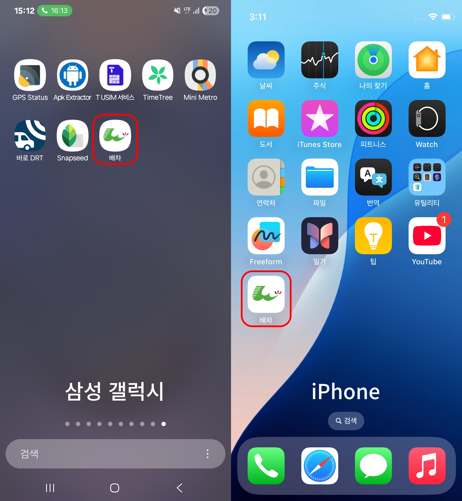

활성화 "☑"되어 있으면 배차표가 갱신될 때 알림을 수신받을 수 있습니다.
페이지 이전 안내
향후 개선의 용이성과 신기능 추가를 위해 배차 및 차량번호 페이지를 https://wjbuses.setcookie.kr/로 이전했습니다. 기존에 사용하던 현재 주소에서의 페이지 제공은 중단하게 되었으니, 앞으로 새 주소에서 더 편리하게 이용해주시길 부탁드립니다.
새로운 기능
홈 화면에 추가:

휴대폰에서 "홈 화면에 추가" 기능을 사용하면 앱을 설치한 것처럼 바로 사용할 수 있습니다.
푸시알림 수신:
활성화 "☑"되어 있으면 배차표가 갱신될 때 알림을 수신받을 수 있습니다.
상세한 내용은 이전된 페이지에서 "도움말"을 확인해 주세요.